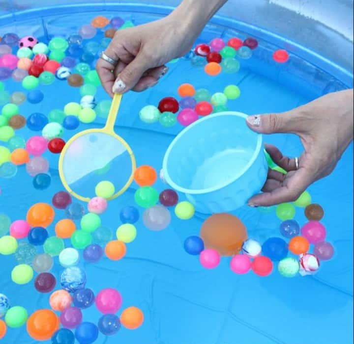
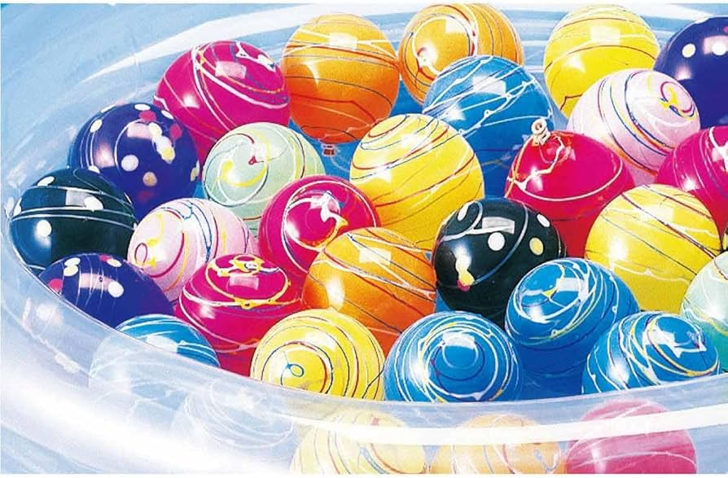
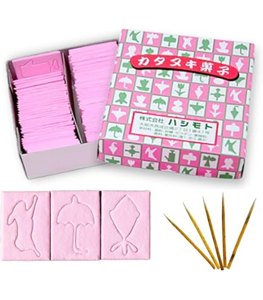
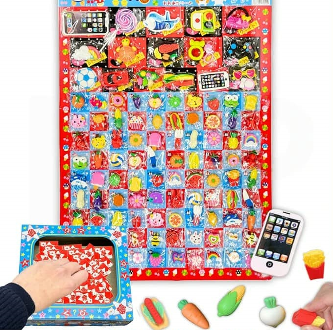
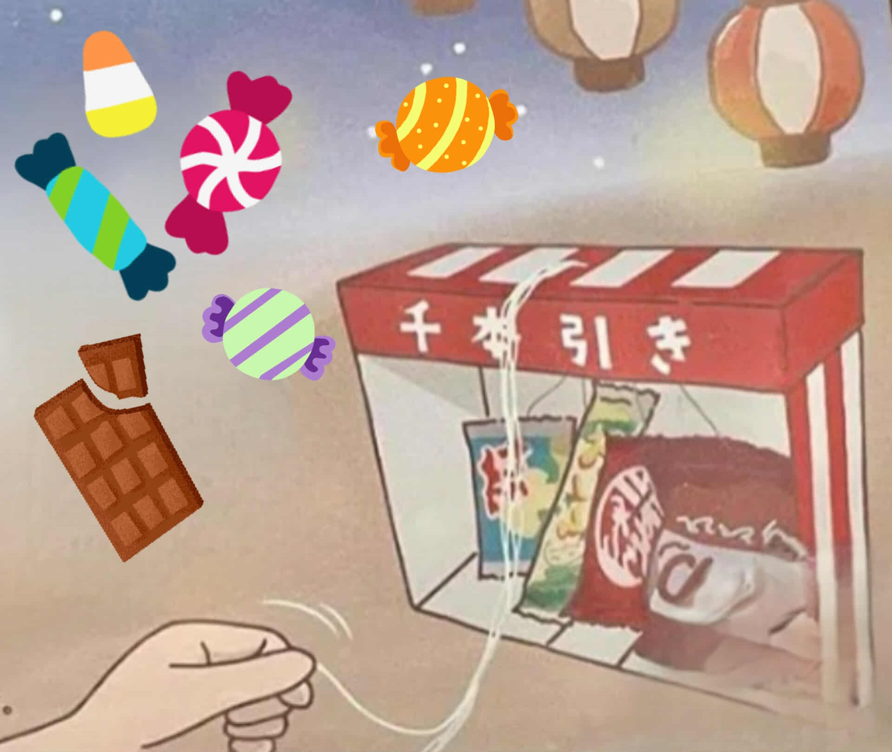
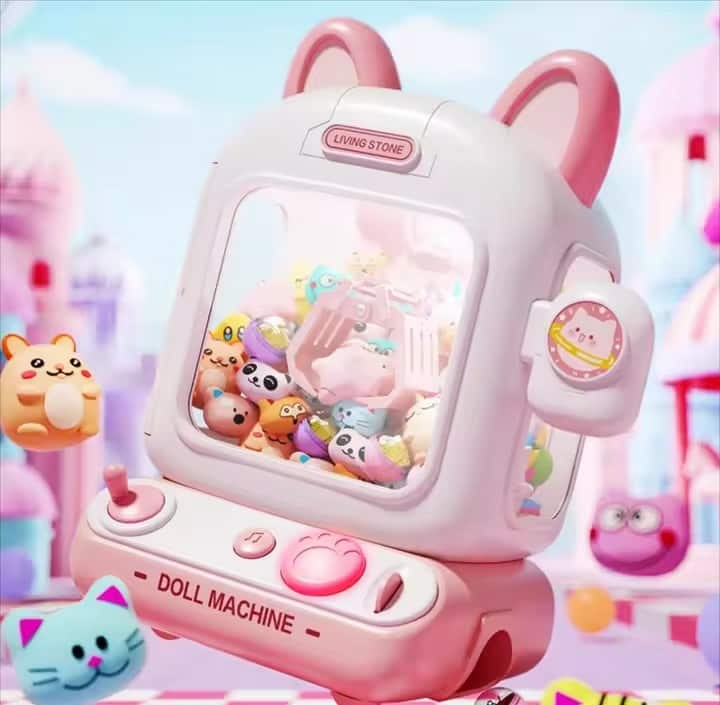

Játékaink

🎈 Super Ball Halászat 🎈
Ebben a mókás játékban egy „poi” nevű, papírból készült kis hálóval kell a vízben úszó színes szuperlabdákat kihalászni! 💦 De vigyázz – a papír könnyen elszakad, így ügyességre és gyorsaságra is szükséged lesz! ✨ Egyszerű, mégis nagyon izgalmas játék, amit Japán nyári fesztiváljain mindenki imád! 🇯🇵🎉

Vízi Jojó Horgászat
A vízi jojó horgászat a japán nyári matsurik egyik legnépszerűbb és legvidámabb játéka! 🎐🎈 A feladat egyszerűnek tűnik: fogj ki minél több színes, vízzel töltött jojót egy különleges papírhurokkal! 💦✨ De vigyázz, a papír könnyen elszakad, így minden próbálkozás izgalmas kihívás! 💖 Ez a hagyományos japán ügyességi játék kicsiknek és nagyoknak egyaránt hatalmas élmény, és garantáltan igazi matsuri hangulatot varázsol bármilyen rendezvényre! 🌸🐰

Katanuki
A Katanuki egy hagyományos japán matsuri ügyességi játék, ahol egy apró tű segítségével kell óvatosan kivágni a mintát egy törékeny cukorlapból! 🍭✨ Elsőre könnyűnek tűnhet, de csak biztos kézzel és sok türelemmel sikerül egyben tartani a figurát! 🌸💖 A Katanuki generációk óta a japán fesztiválok kedvence, ahol minden sikeresen kivágott minta igazi kis győzelem! 🎉 Próbáld ki te is, és derítsd ki, sikerül-e hibátlanul teljesítened a kihívást! 🐰🌟

Radír Lottó
A radíros sorsjegy egy mókás szerencsejáték, ahol a nyeremények között aranyos radírok rejtőznek! ✨ Régen az édességboltokban lehetett kapni, így sokaknak igazi nosztalgikus kedvenc! 🍬 Ma is gyakran találkozhatsz vele fesztiválokon, rendezvényeken és iskolai ünnepségeken — egyszerű, mégis nagyon szórakoztató játék, ami mindig meglepetést tartogat! 🎁💫

🎀 Senbonbiki 🎀
A „Senbonbiki” egy vidám szerencsejáték, amit gyakran láthatsz japán fesztiválokon! 🎉 Előtted rengeteg színes zsinór lóg, és csak annyit kell tenned, hogy kiválasztasz egyet és meghúzod! ✨ A zsinór végén egy meglepetés ajándék vár rád – minden húzás nyer! 🎁 Egyszerű, izgalmas és garantáltan mosolyt csal az arcodra! 😄

🎯 Cicás Nyereménygép 🎯
A Cicás Nyereménygép egy izgalmas játék, ami a valódi daruautomaták működését utainozza – pont, mint a nagyoknak szóló verziókban! 🤖✨ A cél egyszerű: a vezérlőkarral ügyesen irányítva meg kell ragadnod a gépben lévő dolgokat! 🐰💖 Szuper szórakozás kicsiknek, tele izgalommal és sikerélménnyel — vajon mit sikerül kiszedned? 🎀🎁